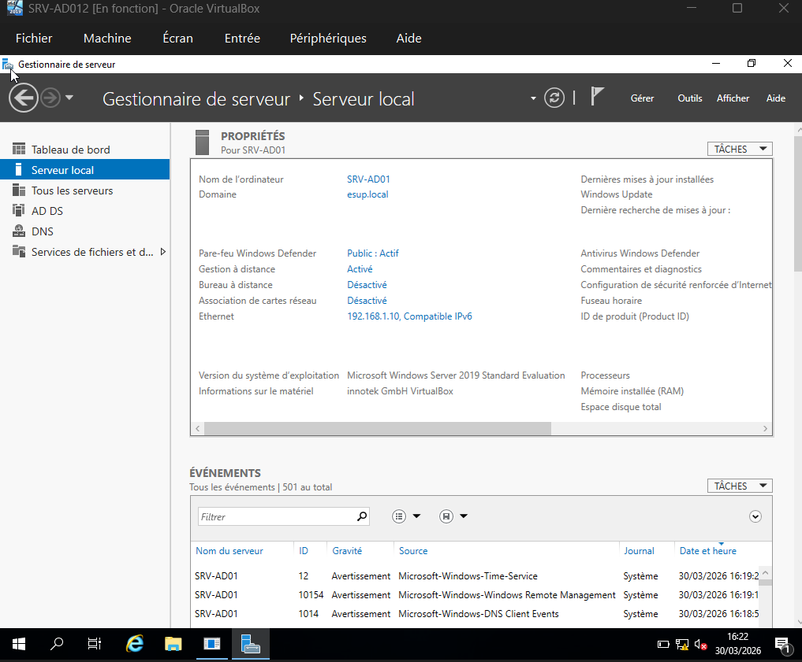
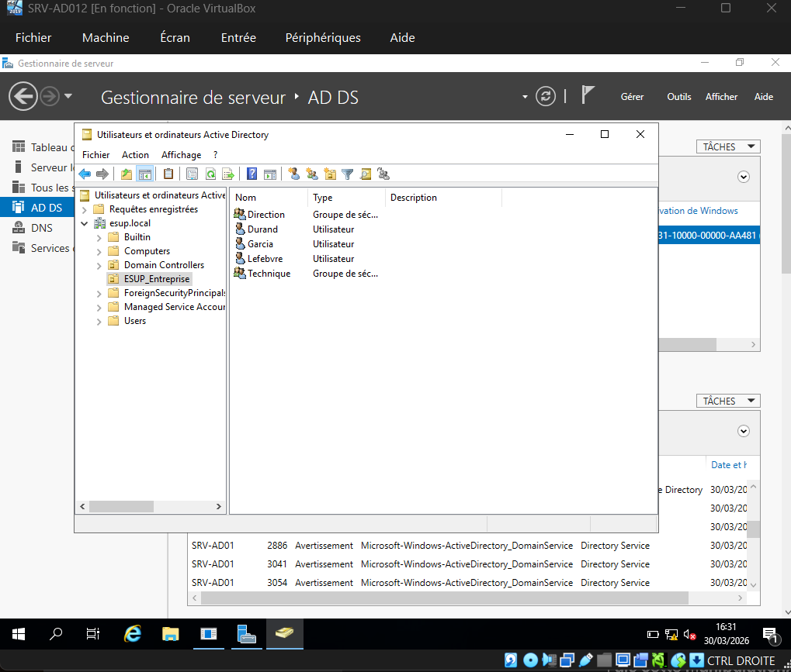
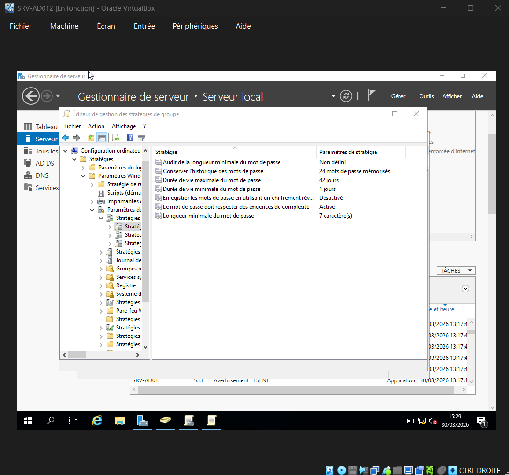
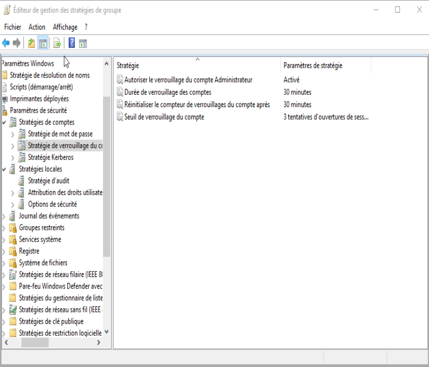
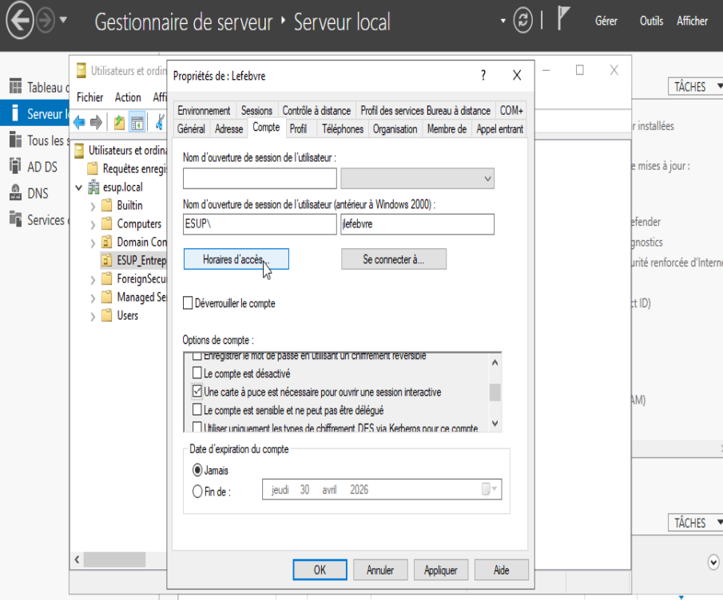
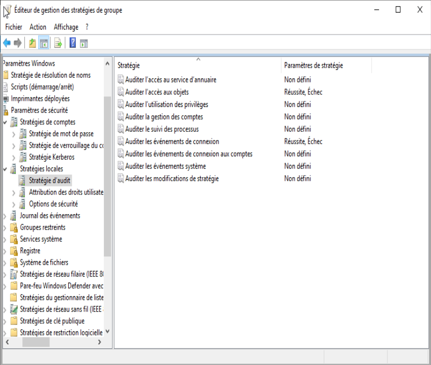
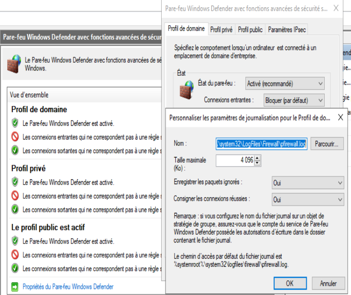

Soutenance de Projet - Bloc 1 SISR
SÉCURISATION & AUTOMATISATION D'UN DOMAINE ESN

Configuration IP & Rôle :
Automatisation PowerShell :



Durcissement des Comptes : Activation de la Complexité (Majuscules, chiffres, caractères spéciaux) et mise en place du Verrouillage de compte après 3 tentatives infructueuses (Protection Brute Force).
Mise en place du 2FA :
Exigence de la Carte à Puce pour les sessions interactives des comptes Administrateurs. Sécurisation physique de l'accès au domaine.


Configuration de l'Audit :
Surveillance active des succès et échecs de connexion. Chaque tentative suspecte est désormais enregistrée dans l'Observateur d'événements.
Réduction de la surface d'attaque :
Configuration du Pare-feu avancé pour autoriser uniquement les flux AD DS. Activation de la journalisation des paquets ignorés pour analyse ATA.

Infrastructure conforme aux spécifications ESUP. Centralisation, Automatisation et Sécurisation terminées.